刘飏Liu Yang
刘飏（英语：Liu Yang）。毕业于英国威斯敏斯特大学，获数字媒体学士及硕士学位。
曾在人民网英国分公司担任实习记者，负责商业活动、文化交流、使馆类活动的摄影摄像、新闻短视频剪辑；同时参与部分活动的前期筹备与现场执行。2026 年 5 月任职于起重集文化传媒有限公司，担任海外 IP 内容运营，独立负责五个 Instagram IP 账号。
Liu Yang (Chinese: 刘飏) graduated from the University of Westminster with a BA and an MA in Digital Media.
Liu previously worked as an intern reporter at People’s Daily Online UK, photographing and filming business events, cultural exchanges and embassy events and editing short news videos, and also helped prepare and run some of the events. In May 2026 Liu joined Qizhongji Culture Media as overseas IP content operator, running its five Instagram IP accounts single-handed.
教育Education
英国威斯敏斯特大学 · 数字媒体硕士（叙事与制作）（2024–2025）University of Westminster · MA Digital Media: Storytelling & Production (2024–2025)
主修课程：Selected modules:
- 数字营销与生成式 AI（Digital Marketing and Generative AI）
- 媒体叙事（Media Storytelling）
- Digital Marketing and Generative AI
- Media Storytelling
英国威斯敏斯特大学 · 数字媒体学士（新闻）（2022–2024）University of Westminster · BA Digital Media: Journalism (2022–2024)
主修课程：Selected modules:
- 互联网文化（Internet Cultures）
- 数据与社会（Data and Society）
- 数字媒体行业实务（Working in Digital Media 1）
- 移动优先：视频与社交媒体内容（Mobile First: Video and Social Media Content）
- 消费文化与社会（Consumer Culture and Society）
- 创意广告（Creative Advertising）
- Internet Cultures
- Data and Society
- Working in Digital Media 1
- Mobile First: Video and Social Media Content
- Consumer Culture and Society
- Creative Advertising
工作经历Experience
起重集文化传媒有限公司 · 海外 IP 内容运营（2026.05–2026.08）Qizhongji Culture Media · Overseas IP Content Operator (May–Aug 2026)
- 运营成果：五个 Instagram 账号共发布 174 条内容，累计播放约 746.5 万，95 条内容点赞过千，连续 12 周每周至少产出 3 条千赞内容；线条小狗账号粉丝从约 2.7 万增至 5 万。
- AI 提效工作流：梳理日常运营流程，识别出内容收集、竞品调研、热点追踪等重复度高、可由 AI 提效的环节，使用 Claude Code 将其封装为 AI Skills，并搭建数据追踪工作台；其中热点追踪 Skill 发现一段处于热度上升期的短视频音频，据此策划制作的 Reels 播放 221 万、点赞 14.3 万、分享 12.7 万。
- 线条小狗内容创意 Skill：针对选题依赖个人灵感、表情包素材多且人工匹配耗时的问题搭建 Skill：按统一的情绪与场景词表为表情包建立索引，归纳角色设定与风格档案，用范例和反例约束输出；输入模糊想法即可产出选题、拆分画面节拍并匹配表情包；经真实需求试跑持续迭代，用该 Skill 制作的视频均点赞过千。
- 数据驱动孵化新账号：官号混发多个 IP 内容，通过系统复盘各 IP 数据，发现奶茶鼠系列的播放与互动明显领先，提出将其独立建号运营，负责账号定位、起号策略、内容排期和官号导流；新号上线 12 天播放约 19.2 万、点赞 1.42 万、分享 1.19 万，粉丝从 0 增至 640。
- 搭建海外 IP 内容体系：作为公司首位专职海外运营，独立负责五个 Instagram IP 账号，从零建立 3 个账号、重整 2 个此前缺乏规划的老账号，为各账号确立人设基调与内容方向；将暹罗厘普调整为拟人化日常共鸣梗后，单月播放从约 0.79 万升至 20.8 万。
- Results: Published 174 posts across five Instagram accounts, reaching about 7.465 million views; 95 posts passed 1,000 likes, with at least 3 such posts every week for 12 consecutive weeks. Maltese grew from about 27,000 to 50,000 followers.
- AI workflow: Mapped the daily routine, picked out repetitive steps that AI could speed up (content collection, competitor research, trend tracking), packaged them as AI skills with Claude Code and built a data-tracking dashboard. The trend-tracking skill surfaced an audio clip that was just starting to rise; the Reel planned around it reached 2.21 million views, 143,000 likes and 127,000 shares.
- Content-idea skill for Maltese: Built a skill to fix two real problems, ideas depending on personal inspiration and slow manual matching from a large sticker library. Indexed every sticker against a shared list of emotions and scenes, wrote up the character and style guide, and constrained output with good and bad examples. Given a rough idea, it proposes a topic, breaks it into visual beats and matches stickers. Refined through real requests; every video made with it passed 1,000 likes.
- Launching a new account from data: The main account posted several IPs side by side. A systematic review showed the BOBARAT series clearly leading on views and engagement, so proposed spinning it off and handled positioning, launch strategy, scheduling and cross-promotion. In its first 12 days the new account reached about 192,000 views, 14,200 likes and 11,900 shares, growing from 0 to 640 followers.
- Building overseas IP content: As the company’s first dedicated overseas operator, ran five Instagram IP accounts single-handed, building 3 from scratch and reworking 2 that had lacked a plan, and set each character’s tone and content direction. After LiPU FRiENDS shifted to anthropomorphic, relatable everyday humour, monthly views rose from about 7,900 to 208,000.
人民网英国分公司 · 实习记者（2023.04–2025.12）People’s Daily Online UK · Intern Reporter (Apr 2023 – Dec 2025)
- 新闻影像采编：参与中远海运等中资企业商业活动、企业推介会、春节文化活动及使馆活动的新闻报道，担任现场摄影摄像；新闻短视频从拍摄、素材整理到剪辑独立交付，多机位长片按分工负责机位与部分剪辑。
- 活动筹备与多方协调：人民网主办或联合主办活动时，参与流程确认、场地布置、物料检查与签到接待；用英语对接外国来宾、主办方、参会机构及使馆相关人员，协调接待、场地、时间节点与拍摄机位，确保筹备与拍摄衔接。
- News photography and video: Covered business events for Chinese companies such as COSCO Shipping, investment promotions, Spring Festival events and embassy events as on-site photographer and camera operator; delivered short news videos independently from filming and logging to editing, and on multi-camera long-form pieces operated assigned cameras and edited parts.
- Event preparation and coordination: For events hosted or co-hosted by People’s Daily Online, helped confirm the run of show, set up venues, check materials and handle check-in; liaised in English with foreign guests, organisers, participating organisations and embassy staff, balancing hospitality, venue rules, timings and camera positions so preparation and filming fitted together.
「仓库」个人灵感记录 App（iOS 原生 + 网页版）· 独立产品设计与开发（2026.09）Cangku idea-capture app (native iOS + web) · Independent product design and development (Sep 2026)
- 需求与设计：针对自己创作中灵感易流失、记下后很少再用的问题，将 iPhone 操作按钮与 Siri 设为一键「快记」，唤起即语音转文字，支持文字、录音、截图混合记录；设计「摸一张」随机唤醒旧灵感，按 # 话题、星标、有图、有录音筛选，并记录灵感的复制次数。
- 开发与发布：以手绘涂鸦、手写字体和 4 套配色建立产品调性；用 Claude Code 开发 iOS 原生版与网页版，并用代码渲染宣传视频。
- Need and design: Built to fix a problem in Liu’s own creative work: ideas slip away, and the ones written down are rarely used again. The iPhone Action Button and Siri open a one-tap “quick note” that starts speech-to-text at once, mixing text, voice memos and screenshots; a “draw one” button brings back a random old idea, ideas can be filtered by #topic, star, image or audio, and each idea records how many times it has been copied for use.
- Build and launch: Gave the app its character with hand-drawn doodles, handwritten lettering and four colour schemes; developed the native iOS and web versions with Claude Code, and rendered the promo video in code.
《得闲谨制》电影伦敦线下推广 · 门店拓展（2025.11）Dexian Jinzhi (film) London offline promotion · Venue outreach (Nov 2025)
- 推广目标：在伦敦为电影落地线下宣传点位，联系影院和餐馆，确认海报布置并争取店内展示。
- 执行方法：针对商户对占用空间和清洁负担的顾虑，设计零成本合作方案（免费布置、观影福利、线上标注门店）；按客群和老板是否常驻筛选门店，按商圈规划路线。联系约 27 家餐馆，15 家同意展示，转化率约 56%。
- Goal: Secured offline promotion spots for the film in London, contacting cinemas and restaurants, confirming poster placement and seeking in-store display.
- Approach: Addressed businesses’ concerns about space and cleaning with a zero-cost partnership offer (free set-up, screening perks and online venue credits); shortlisted venues by clientele and whether the owner was usually on site, and planned routes by district. Contacted about 27 restaurants, 15 of which agreed, a conversion rate of about 56%.
《山海无界·乐传全球》中欧艺术交流音乐会 · 伦敦本地执行团队成员（2025.09）China–Europe arts exchange concert · Member of the London local team (Sep 2025)
- 品牌拍摄对接：单独对接冠名品牌方，确认官方拍摄规范、必拍镜头、采访提纲与出镜要求；演出当天担任现场摄影摄像，场地因消防要求否决原定机位、禁用三脚架后，改用手持和稳定器保障必拍镜头，并提出演后补拍满足品牌方临时需求。
- 本地供应商协调：按演出需求整理乐器清单，通过英文邮件完成伦敦本地供应商的询价与预订，确认租期、损坏赔付与取还时间，并预约货车、安排卸货；发现配件缺失后拍照留证，同时联系原租赁商和备用供应商紧急调配。
- Brand filming liaison: Liaised directly with the title sponsor to confirm official filming guidelines, must-have shots, interview outlines and on-camera requirements. On the day, worked as photographer and camera operator; when fire regulations ruled out the planned positions and tripods, switched to handheld and gimbal to secure the must-have shots, and proposed a post-show pick-up shoot for the sponsor’s late requests.
- Local suppliers: Compiled the instrument list, handled quotes and bookings with London suppliers by English email, confirmed hire periods, damage liability and collection and return times, and booked vans and unloading slots; when parts were found missing, documented them with photos and sourced replacements from the original and backup suppliers.
《Aliens Stole Your Culture》跨文化播客 · 独立主理人（2025.03）Aliens Stole Your Culture cross-cultural podcast · Independent host and producer (Mar 2025)
- 选题与嘉宾建联：独立运营的跨文化播客。2025 年初，大批海外 TikTok 用户涌入小红书，以此为题策划一期节目；按内容垂类、表达风格和英文录制意愿筛选，联系约 10 位外籍博主并逐一定制私信，邀请到英国创作者 Brian Smith 和挪威创作者 Gabi。
- 采访与制作：录制前根据嘉宾主页和过往内容做背景调研，与嘉宾共同调整访谈提纲；独立完成录音、控场与后期（降噪、双语字幕、shownotes），将两个多小时素材剪成约 12 分钟成片。
- Topic and guests: An independently run cross-cultural podcast. When large numbers of TikTok users moved to Xiaohongshu in early 2025, planned an episode on it; screened candidates by niche, speaking style and willingness to record in English, contacted about 10 overseas creators with individually written messages, and booked British creator Brian Smith and Norwegian creator Gabi.
- Interview and production: Researched each guest’s profile and past content beforehand and shaped the outline with them; handled recording, hosting and post-production (noise reduction, bilingual subtitles, show notes) alone, cutting over two hours of material into about 12 minutes.
《未来·观》中英青年数字创意展 · 嘉宾联络与参会协调（2024.09）China–UK youth digital creativity exhibition · Guest liaison and attendance coordination (Sep 2024)
- 嘉宾邮件沟通：展会为 2024 伦敦设计节官方伙伴活动，为期 4 天，每日嘉宾约 70 至 100 人；负责出席确认、观展须知、交通入场指引和电子邀请函等中英文邮件，日均处理约 30 至 60 封，开展前高峰期达 60 至 90 余封。
- 信息管理：按观众、特邀嘉宾、创作者、媒体和赞助商分类维护台账，配合预约核验和票务安排。
- Guest email communication: The exhibition was an official partner event of the 2024 London Design Festival, running for 4 days with about 70 to 100 guests a day. Handled Chinese and English emails covering attendance confirmations, visitor information, travel and entry directions and e-invitations, about 30 to 60 a day and 60 to 90-plus at the peak before opening.
- Records management: Maintained records split by visitors, invited guests, creators, media and sponsors, supporting booking checks and ticketing.
AIGC 作品AIGC work
- 《小星电话手表广告》：AI 广告片（个人练习作品），为虚构的儿童电话手表制作，约 50 秒
- 《如果真的有奶蛙》：AI 短片，伪纪录片形式，个人抖音账号播放 22.9 万
- 《吸血鬼与南瓜》：AI 情景喜剧，模仿《老友记》风格，约 1 分 10 秒
- Xiaoxing Phone Watch Ad: AI commercial (personal practice piece) for a fictional children’s phone watch, about 50 seconds
- If Naiwa Were Real: AI short in mockumentary form, 229,000 views on Liu’s own Douyin account
- The Vampire and the Pumpkin: AI sitcom in the style of Friends, about 1 minute 10 seconds
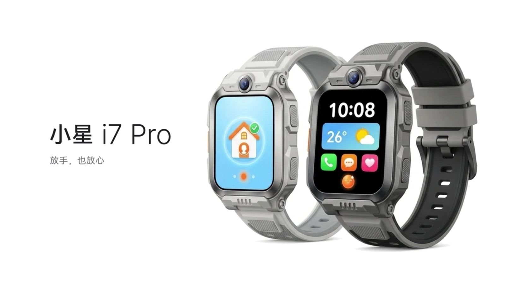
《小星电话手表广告》是一部 AI 生成的广告短片，为儿童电话手表「小星 i7 Pro」制作，片长约 50 秒。影片讲述小学生小宇偷偷进入电玩城，被母亲通过手表定位发现的经过，以喜剧形式展示手表“定位精确到楼层”的功能。片尾标语为“放手，也放心”。（全文……）
Xiaoxing Phone Watch Ad is an AI-generated commercial for the Xiaoxing i7 Pro children’s phone watch, about 50 seconds long. It follows a schoolboy, Xiaoyu, who sneaks into an arcade and is found by his mother through the watch’s location tracking, using comedy to show that the watch can locate a child down to the floor. Its closing line is “Let go, with peace of mind.” (Full article…)
AI 广告 · 儿童电话手表 · 约 50 秒AI commercial · children’s phone watch · about 0:50
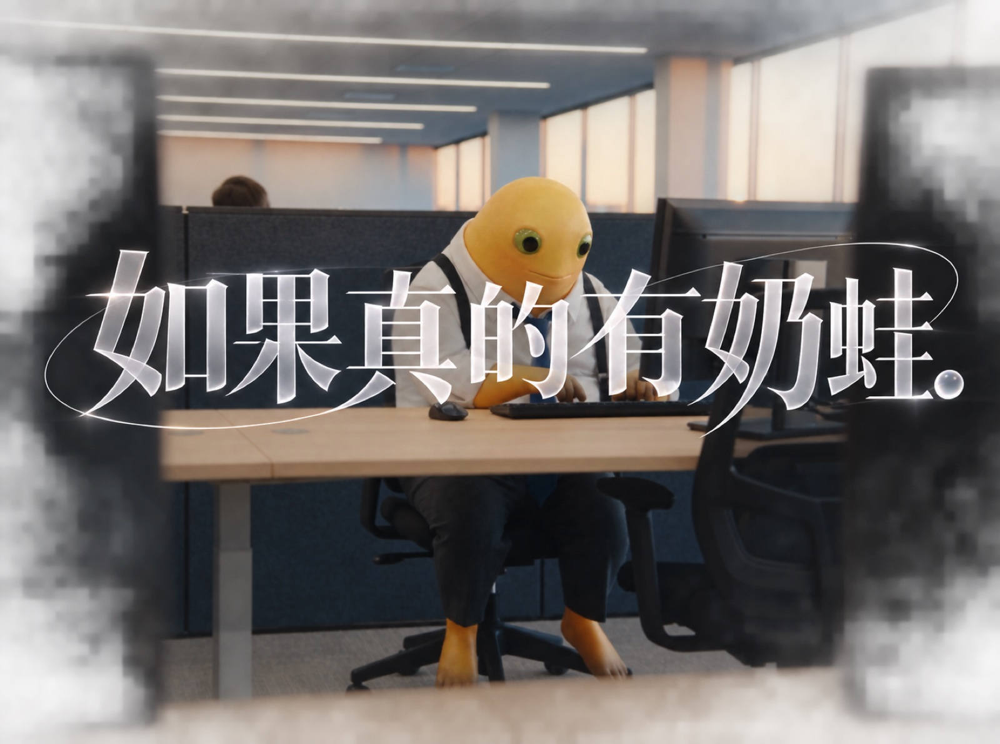
《如果真的有奶蛙》If Naiwa Were RealAI 娱乐短视频 · 伪纪录片 · 播放 22.9 万次AI entertainment short · mockumentary · 229,000 views
 《吸血鬼与南瓜》The Vampire and the Pumpkin
《吸血鬼与南瓜》The Vampire and the PumpkinAI 情景喜剧 · 英语对白 · 约 1 分 10 秒AI sitcom · English dialogue · about 1:10
- ……《如果真的有奶蛙》的分享量（2.4 万次）高于点赞量（1.7 万次）？
- ……《小星电话手表广告》中母亲的台词经多轮删减，最终只保留了“给你五秒”四个字？
- … that If Naiwa Were Real was shared more times (24,000) than it was liked (17,000)?
- … that the mother’s lines in Xiaoxing Phone Watch Ad were cut over several rounds until only “Five seconds” remained?
以下是刘飏在 AIGC 视频制作中总结的提示词编写 SOP。每条视频提示词按此顺序逐项编写，三部作品均采用这一写法；各片的具体做法见各条目的「制作」章节。
This is the prompt-writing SOP Liu Yang has developed through AIGC video work. Every video prompt is written section by section in this order, and all three works use it; how each film applied it is described in the Production section of its article.
场景 → 格式 → 画面与机位 → 人物规则 → 最重要的两条规则 → 参考图用法 → 产品 → 面部 → 空间 → 动作（带时间码）→ 表演 → 摄影机 → 光学 → 光线 → 调色 → 不许静止 → 数量锁定 → 声音 → 禁止
Scene → Format → Frame and camera position → Character rules → The two rules that matter most → Use of references → Product → Face → Space → Action (timecoded) → Performance → Camera → Optics → Light → Grade → No freezing → Count lock → Sound → Forbidden
小星电话手表广告Xiaoxing Phone Watch Ad
《小星电话手表广告》是刘飏独立策划制作的一部 AI 广告练习作品，为虚构的儿童电话手表「小星 i7 Pro」制作，片长约 50 秒，目标受众为 5 至 12 岁小学生的家长。影片以喜剧形式展示手表“定位精确到楼层”的功能，片尾标语为“放手，也放心”。
Xiaoxing Phone Watch Ad is an AI commercial that Liu Yang planned and made alone as a practice piece, for a fictional children’s phone watch, the Xiaoxing i7 Pro. It runs about 50 seconds and is aimed at parents of children aged 5 to 12. The film uses comedy to show that the watch can locate a child down to the floor, and closes on the line “Let go, with peace of mind.”
成片Film
剧情Plot
小学生小宇与同学胖墩、朵朵偷偷前往商场内的电玩城。朵朵担心被发现，小宇回头张望后表示“怎么可能”。小宇的母亲在办公室收到手表推送的提醒，在地图上看到孩子已进入电玩城，随即拨通手表电话。小宇刚接通，母亲只说了一句“给你五秒”，背景音乐随即中断；小宇起身跑开，同学说：“他妈知道了。”
影片后半部分转入产品展示，依次呈现 GPS 楼层定位、刷手表进站、碰一碰添加好友、AI 助手“小星”答题和睡眠监测等功能，最后以白底产品定版和标语“放手，也放心”结束。
Schoolboy Xiaoyu sneaks into an arcade in a shopping mall with his friends Pangdun and Duoduo. Duoduo worries they will be found out; Xiaoyu looks back and insists there is no way. At her office, his mother receives an alert from the watch, sees on the map that her son has entered the arcade, and calls his watch. As soon as he answers she says only “Five seconds,” and the music cuts out. Xiaoyu runs off, and a friend remarks, “His mum knows.”
The second half turns to the product, showing floor-level GPS location, tapping through a station gate with the watch, adding a friend by touching watches, asking the AI assistant Xiaoxing for homework help, and sleep tracking. It ends on a white product card with the line “Let go, with peace of mind.”
制作Production
构思Concept
刘飏在创作构思时认为，儿童安全类产品的广告容易以制造焦虑的方式呈现，因此将本片设定为孩子“被抓包”的小喜剧，以孩子的小心思和母亲的从容形成对比。片中的手表被定位为让家长能够放心让孩子独立行动的工具。
When developing the concept, Liu felt that advertising for child-safety products tends to rely on fear, so the film was written as a small comedy about a child getting caught, contrasting the boy’s scheming with his mother’s calm. The watch is presented as something that lets parents feel safe letting their children go out alone.
场景选择Setting
开场场景曾考虑河边、水塘等家长最担心的地点，但这会使全片变为恐吓式广告。最终选定的电玩城既是小学生可能偷偷前往的地方，“商场三楼的某家店”也便于表现楼层级定位。母亲的台词经多轮删减，最终只保留“给你五秒”。
A riverbank or a pond, the places parents fear most, were considered for the opening, but they would have turned the film into a scare. The arcade was chosen because children do sneak off to such places, and “a shop on the third floor of a mall” suits a demonstration of floor-level location. The mother’s lines were cut over several rounds until only “Five seconds” remained.
视觉风格Visual style
剧情段落采用接近实拍的影像风格：自然光与室内灯混合照明，手持摄影，中等偏浅景深，细颗粒，调色克制。提示词中明确要求呈现真实皮肤毛孔，避免磨皮和柔光雾化，以减少 AI 视频常见的油亮感。
产品段落改为高调棚拍风格，使用浅暖灰白无缝背景、大面积柔光与固定机位，画面留白较多，与昏暗的电玩城形成明显区分。早期曾尝试深蓝背景加顶光，因效果接近舞台灯光而弃用。全片以橙色作为唯一品牌强调色，用于 SOS 按键、界面图标、定位点和角色书包上的挂件。
The story scenes aim for a live-action look: mixed daylight and practical lighting, handheld camera, moderately shallow depth of field, fine grain and a restrained grade. The prompts specifically asked for visible skin pores and no smoothing or soft-focus haze, to avoid the glossy look common in AI video.
The product scenes switch to a high-key studio look, with a warm light-grey seamless background, broad soft light, a locked-off camera and generous negative space, setting them clearly apart from the dim arcade. A dark-blue background with top light was tried early on and abandoned because it resembled stage lighting. Orange is the only brand accent colour in the film, used for the SOS button, interface icons, the location marker and a charm on the boy’s schoolbag.
分镜Storyboard
| # | 景别Shot size | 机位Camera | 内容Action |
|---|---|---|---|
| 1 | 中景Medium | 背后过肩，孩子头部高度，手持跟拍Over the shoulder from behind, at the children’s head height, handheld | 三人快步前进，小宇回头张望后加快脚步The three hurry on; Xiaoyu looks back and walks faster |
| 2 | 特写Close-up | 游戏机方向盘位于前景，手持缓慢推近Arcade steering wheel in the foreground, slow handheld push-in | 手表震动，屏幕显示“妈妈”来电The watch vibrates, showing an incoming call from “Mum” |
| 3 | 近景转升格Close-up to slow motion | 贴近地面的低机位，与手腕齐高Low, near the floor, at wrist height | 小宇跑过镜头，手腕入画后转为慢动作，随后甩镜切至棚拍产品镜头Xiaoyu runs past; the wrist enters frame in slow motion, followed by a whip pan to the studio product shot |
| 4 | 中景Medium | 闸机一侧，人物左后方，略高于肩Beside the ticket gate, behind the boy’s left side, slightly above shoulder height | 小宇以手表刷闸进站，界面提示弹出Xiaoyu taps the watch at the gate and an interface prompt appears |
素材准备Assets
正式生成视频前，先制作人物定妆照、三视图和手表四视图，并为手表的每个屏幕状态单独生成界面图。界面内容由参考图锁定，不由 AI 自行生成文字。提示词中对每张参考图只借用指定部分，并写明取舍，例如只取人物面部而不取影棚光，只取手表而不取背景。
Before any video was generated, look tests, three-view character sheets and four-view sheets of the watch were made, along with a separate interface image for each screen state. The reference images fix the interface content so that the AI does not invent text. The prompts take only a specified part of each reference and state what to leave out: the face but not the studio lighting, the watch but not the background.
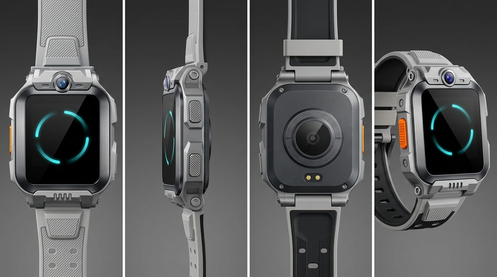
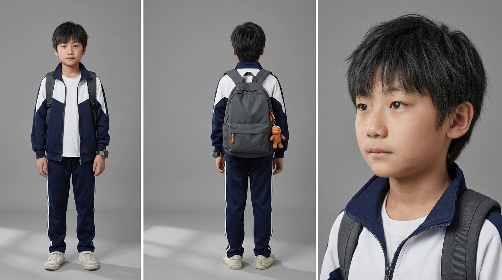
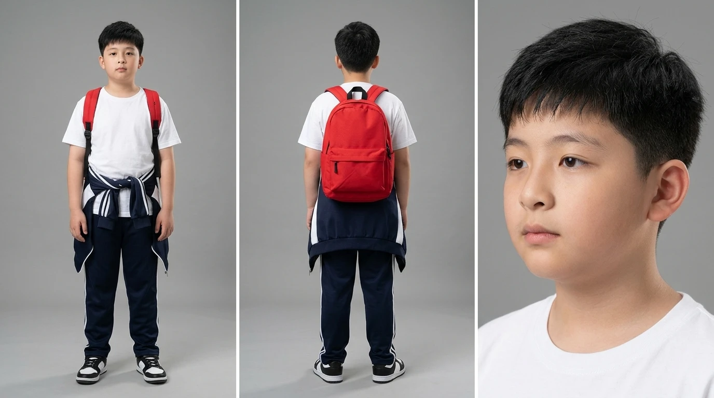
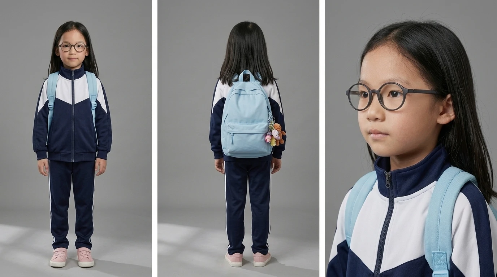
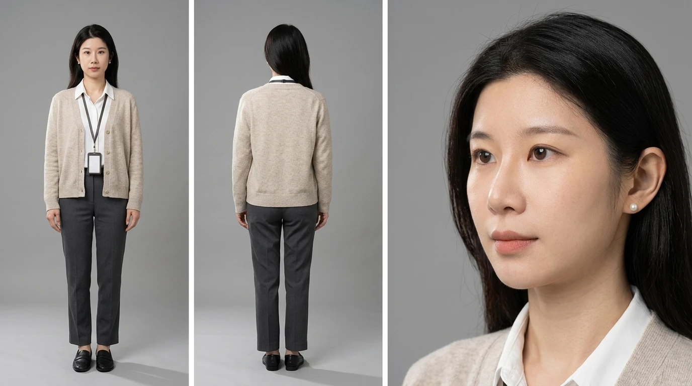
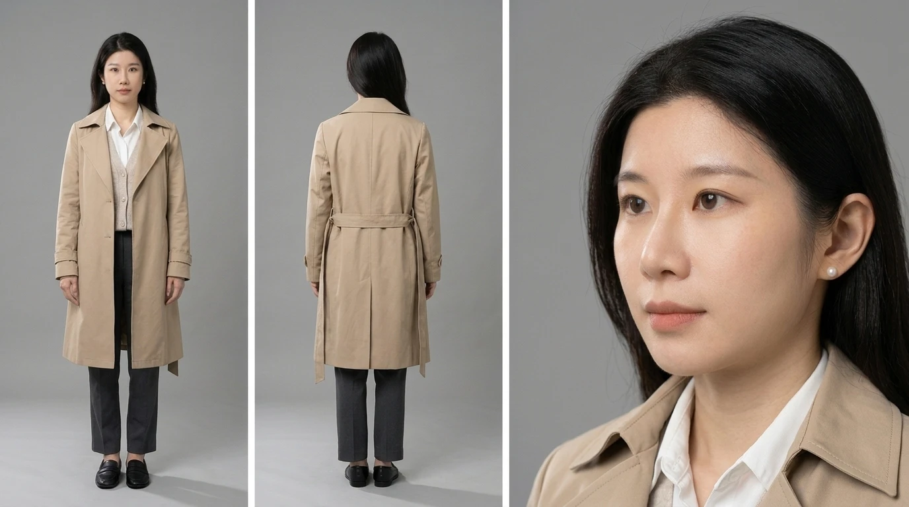
提示词写法Prompt writing
每个镜头的提示词只表达一件事。尺寸以数字代替形容词：提示词不写“手表小一点”，而写“表壳不比手腕宽、不比拇指长、凸起不超过小指粗细”。提示词中还预先写明失败条件，例如“如果小宇说了妈妈的台词，这个镜头就是错的”。
Each shot’s prompt expresses one thing only. Sizes are given as numbers rather than adjectives: not “make the watch smaller” but “the case no wider than the wrist, no longer than the thumb, no thicker than the little finger”. The prompts also state failure conditions in advance, such as “if Xiaoyu says his mother’s line, the shot is wrong”.
生成过程Generation
以母亲发现孩子位置的镜头为例，该镜头共生成 4 次，提示词修改 6 版。早期版本中人物皮肤呈塑料质感，并带有金色逆光和柔光雾化；最终版本改为真实办公室光线，并注明皮肤哑光、可见毛孔。推镜最初接近后期数码放大，缺乏空间感，最终版本改为描述摄影师手持向前移动，并要求前景中的显示器边缘、键盘比人物移动更快，以形成视差。镜头在母亲按下拨号键时结束，“给你五秒”一句留至下一镜头。
The shot in which the mother finds her son’s location was generated four times, with six revisions of the prompt. Early versions gave the actor plastic-looking skin with golden backlight and a soft-focus haze; the final version used ordinary office light and specified matte skin with visible pores. The push-in initially looked like a digital zoom with no sense of space, so the final prompt described the camera operator walking forward and required the monitor edge and keyboard in the foreground to move faster than the actor, creating parallax. The shot ends as she presses the call button, leaving the line “Five seconds” for the next shot.
提示词节选：Prompt excerpt (translated from Chinese):
【最重要的两条规则】 1. 每个镜头都是摄影师手持摄影机在物理空间中缓慢向前走近。必须有真实的视差：离镜头近的物体比人物移动得更快，逐渐滑出画面边缘……如果画面只是整体等比例变大、没有视差，看起来像后期数码放大，这个镜头就是错的。 2. 妈妈永远不看镜头。 【动作】 0.0–0.8 秒：她的右手握着鼠标，食指点击了两下，又滚动了一下滚轮。 0.8 秒：手机亮屏，在桌面上嗡嗡震动。 0.8–2.8 秒：她的眼睛瞟向手机，右手松开鼠标，顺势拿起手机，举到胸前低头看。 …… 6.9–7.2 秒：拇指干脆地按下绿色拨号按钮。画面在这里结束。 【面部】真实的成年人皮肤：可见毛孔，肤色有自然的细微不均……没有油光，没有磨皮，没有美颜。 【禁止】数码放大或裁切式的推进；滑轨式完全平滑的移动；金色光晕、雾化、柔光滤镜；皮肤油光、塑料感……
[The two rules that matter most] 1. Every shot is an operator walking slowly forward through real space with a handheld camera. Real parallax is required: objects near the lens move faster than the person and slide out of frame… If the whole image simply scales up with no parallax, it looks like a digital zoom and the shot is wrong. 2. Mum never looks at the lens. [Action] 0.0–0.8 s: right hand on the mouse; two clicks, one scroll. 0.8 s: the phone lights up and buzzes on the desk. 0.8–2.8 s: her eyes go to the phone; she lets go of the mouse, picks the phone up and looks down at it at chest height. … 6.9–7.2 s: her thumb presses the green call button. The shot ends here. [Face] Real adult skin: visible pores, slightly uneven tone… no shine, no smoothing, no beauty filter. [Forbidden] Digital zoom or crop-style push-ins; perfectly smooth slider moves; golden glow, haze, soft-focus filters; oily or plastic skin…
后期Post-production
AI 视频负责人物表演与运动；片尾定版动画、文字和通知卡片由代码 agent 合成。音乐只描述情绪曲线和卡点时间，风格交由模型生成。
AI video handles performance and movement; the end card, on-screen text and notification cards were composited by a coding agent. The music brief described only the emotional curve and cue times, leaving the style to the model.
图集Gallery
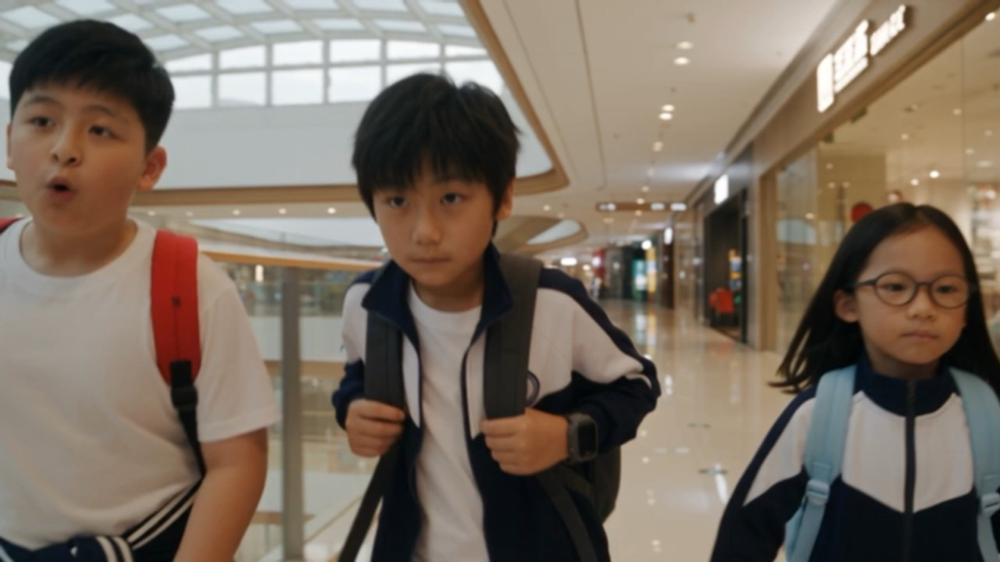
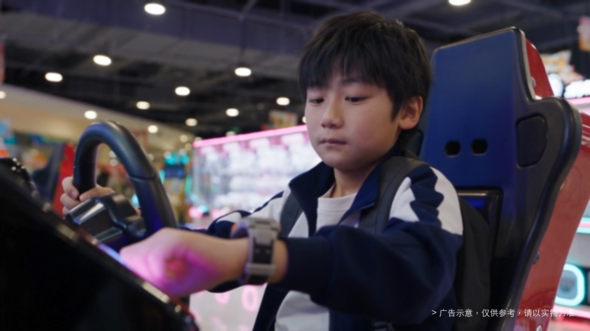
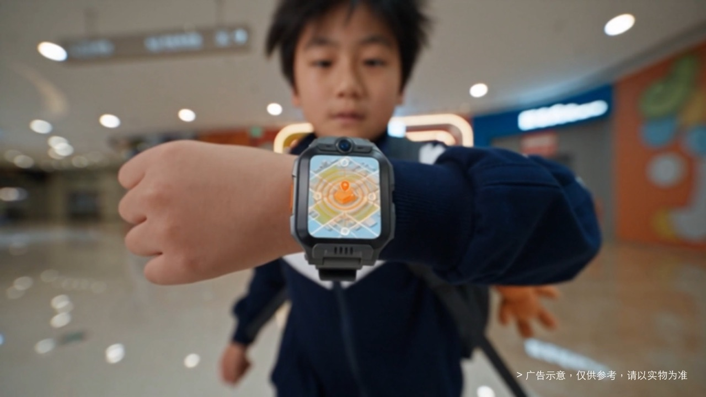
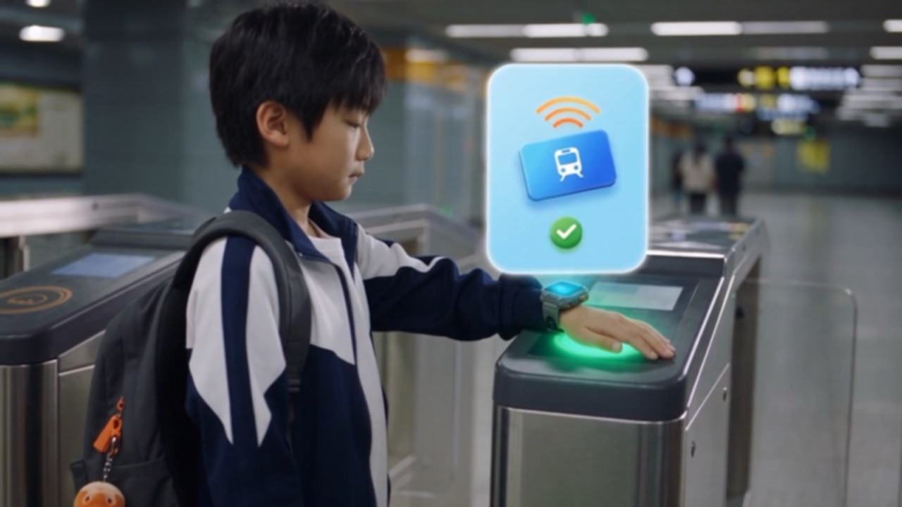
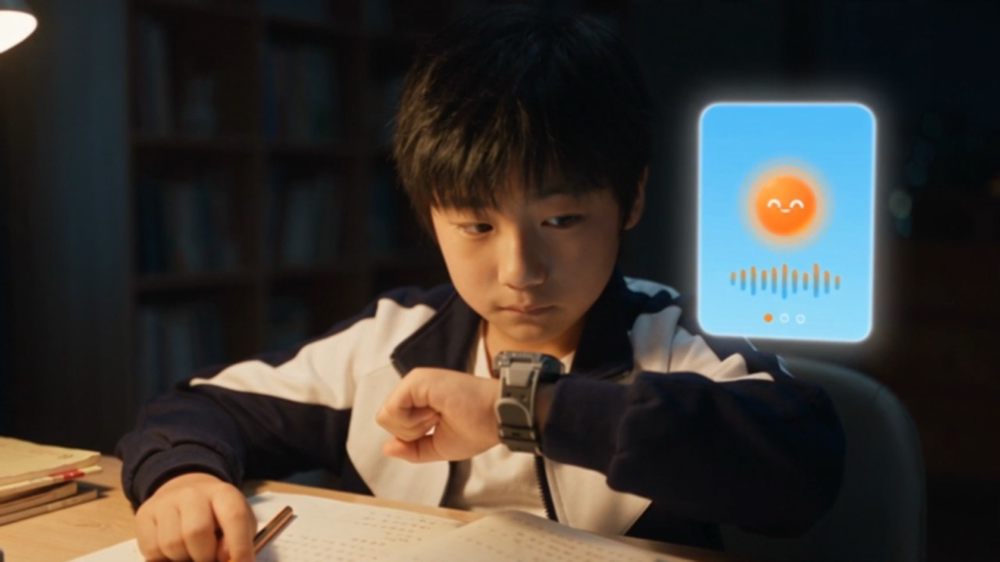
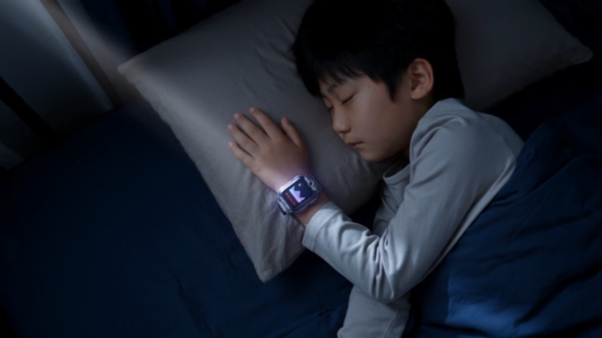
参见See also
如果真的有奶蛙If Naiwa Were Real
《如果真的有奶蛙》是一部以网络形象“奶蛙”为主角的 AI 娱乐短视频，采用伪纪录片形式和 4:3 画幅，于 10 月 17 日发布。影片设想奶蛙真实存在于现实世界，以家用摄像机偷拍的视角，呈现其作为上班族、拆弹专家、搬家工人、消防员、黑帮老大、保安和明星等不同身份的生活。影片发布后播放量达 22.9 万次。
If Naiwa Were Real is an AI entertainment short starring the internet character Naiwa (奶蛙), made as a mockumentary in a 4:3 frame and released on 17 October. It imagines Naiwa as a real being and, through the eyes of a hidden home camcorder, shows her living different lives: office worker, bomb-disposal expert, removal worker, firefighter, mob boss, security guard and celebrity. The video has been viewed 229,000 times.
成片Film
剧情Plot
影片开场于一间办公室，奶蛙坐在工位前敲击键盘，周围同事没有察觉异样。旁白提问：“如果这个世界上真的有奶蛙呢？她现在会在做什么呢？”随后影片以三组对照依次展开：细心的拆弹专家与搬家工人，从火场救出橘猫的消防员与抚摸同一只猫的黑帮老大，追人的保安与被狗仔追拍的明星。七种身份的奶蛙最终同时出现在一部电梯中。结尾，奶蛙穿着睡衣在家中吃面，停下筷子直视镜头，旁白问：“所以……她会是谁？”
The film opens in an office, where Naiwa is typing at a desk and none of her colleagues notice anything unusual. A voice-over asks, “What if Naiwa really existed? What would she be doing right now?” The film then moves through three pairs of contrasts: a careful bomb-disposal expert and a removal worker; a firefighter rescuing a ginger cat from a fire and a mob boss stroking the same cat; a security guard giving chase and a celebrity being chased by paparazzi. All seven versions of Naiwa then appear together in a lift. At the end, Naiwa sits at home in pyjamas eating noodles, stops, and looks straight into the camera as the voice-over asks, “So… who would she be?”
制作Production
构思Concept
奶蛙大多被当作玩梗的 meme 形象，但刘飏认为人们也能在它身上看到普通人自己的影子，于是尝试在玩梗之外给它更深一层的表达：让它走进完全写实的城市生活，像普通人一样上班、加班、被忽视，并以七种不同身份出现。片中没有任何人对奶蛙的存在表现出惊讶，影片借此表达“每个普通人身上都可能存在多种人生”的主题。制作前，刘飏先确定了整体叙事结构与分镜，以多段蒙太奇和三组身份对照推进全片。
Naiwa is mostly treated as a meme, but Liu felt people could also see something of themselves in her, and tried to take her beyond the joke: the film places her in an entirely realistic city, going to work, staying late and going unnoticed like anyone else, in seven different roles. No one in the film reacts to her existence, which the film uses to suggest that any ordinary person might have many possible lives. Liu settled the overall narrative structure and storyboard before production, building the film as a multi-part montage driven by three pairs of contrasting roles.
视觉风格Visual style
全片统一采用家用摄像机拍摄的伪纪录片风格，几乎每个镜头都设定为“被偷拍”：远处长焦偷拍、藏在包中拍摄、慌乱中甩镜、狗仔倒退追拍等。所有镜头均为手持、标准焦段，并保留自动对焦的迟疑。照明只使用场景中实际存在的光源，包括办公室灯管、停车场工作灯、火光与警灯、闪光灯、家中的落地灯和电视光。色调略偏暖、略褪色，反差较低，接近录像带转制的效果；奶蛙的黄色在各场景中始终是画面中唯一饱和的暖色。
The whole film is styled as home-camcorder mockumentary, with almost every shot framed as if filmed in secret: long-lens spying from a distance, a camera hidden in a bag, panicked whip pans, a paparazzo walking backwards. All shots are handheld with a normal lens and keep the hesitation of autofocus. Lighting comes only from sources present in each scene, including office tubes, car-park work lights, fire and police lights, camera flashes, and a floor lamp and television at home. The colour is slightly warm and faded with low contrast, close to a tape transfer, and Naiwa’s yellow is always the only saturated warm colour in the frame.
分镜Storyboard
| # | 镜头Shot | 机位Camera | 内容Action |
|---|---|---|---|
| 1 | 办公室，全景推至近景Office, wide to close | 约 12 米外，同事从两台显示器之间以长焦偷拍About 12 m away, a colleague filming between two monitors with a long lens | 奶蛙敲击键盘，同事经过画面，奶蛙疲惫地靠进椅子Naiwa types; a colleague crosses frame; she slumps back in her chair |
| 2 | 消防员，全景推至中近景Firefighter, wide to medium close | 街对面约 15 米，围观者在警戒线后平视拍摄About 15 m across the street, an onlooker behind the cordon at eye level | 浓烟中出现蛋形剪影，奶蛙抱着橘猫走出An egg-shaped silhouette appears in the smoke; Naiwa walks out carrying a ginger cat |
| 3 | 电梯，全景Lift, wide | 电梯门正前方约 6.5 米，胸口高度About 6.5 m in front of the doors, chest height | 电梯门打开，七个身份的奶蛙分两排站立The doors open on seven versions of Naiwa standing in two rows |
| 4 | 家中，中景Home, medium | 客厅对面约 2.5 米，略低于视线About 2.5 m across the living room, just below eye level | 奶蛙吃面看电视，停下筷子转向镜头Naiwa eats noodles in front of the TV, stops and turns to the camera |
电梯镜头提示词Prompt for the lift shot
早晨，写字楼电梯厅。一个人拿着家用摄像机，安静地对着一部宽大的货客两用电梯拍。“叮”的一声，电梯门缓缓打开：宽敞的轿厢里站着七个一模一样的圆滚滚的黄色生物，各穿一套不同职业的衣服——交易员、拆弹专家、搬家工人、消防员、黑帮老大、夜班保安、明星。他们面无表情地站着，谁也不说话，谁也不出来。4 秒，手持，标准焦段，没有变焦，4:3。 七张定妆图各绑定一个位置：前排从左到右是交易员、黑帮老大、明星；后排从左到右是搬家工人、消防员、拆弹专家、保安。七个是同一个生物，只有衣服不同，衣服之间绝不混合。每两个之间留 20 到 30 厘米空隙，身体和衣服互不接触、互不重叠。 光线只来自真实光源：轿厢天花板 5000K 的白色灯板，电梯厅 3200K 的暖色筒灯，左侧玻璃门透进来 6500K 的清晨日光。家用摄像机质感，略偏暖、略微褪色，门打开时自动曝光先过曝再压下来。 禁止：广角变形、变焦、第八个或少于七个、身体穿插或融合、衣服混合、任何人看镜头、任何文字。
Morning, an office lift lobby. Someone with a home camcorder quietly films a wide service lift. Ding: the doors open on seven identical round yellow creatures, each in a different work outfit: trader, bomb-disposal expert, removal worker, firefighter, mob boss, night guard, celebrity. Blank faces; nobody speaks, nobody steps out. 4 s, handheld, normal lens, no zoom, 4:3. Each of the seven costume references is tied to one position. Front row, left to right: trader, mob boss, celebrity. Back row: removal worker, firefighter, bomb-disposal expert, guard. All seven are the same creature; only the clothes differ, and outfits never mix. 20–30 cm between each; bodies and clothes never touch or overlap. Light only from real sources: a 5000K ceiling panel in the lift, 3200K warm downlights in the lobby, 6500K morning daylight through the glass door on the left. Camcorder look, slightly warm and faded; when the doors open, the auto-exposure blows out and then settles. Forbidden: wide-angle distortion, zoom, an eighth figure or fewer than seven, merged bodies, mixed outfits, anyone looking at the lens, any text.
反响Reception
影片发布首日（10 月 17 日）单日播放约 5.8 万次。截至统计时，影片播放 22.9 万次，点赞 1.7 万次，分享 2.4 万次，分享量高于点赞量，分享率约 10%。完播率为 23.31%，5 秒完播率 53.14%，2 秒跳出率 30.55%，平均播放时长 14 秒，各项指标均高于所在账号此前发布的作品。
The video drew about 58,000 views on its release day, 17 October. At the time of counting it had 229,000 views, 17,000 likes and 24,000 shares, with shares outnumbering likes for a share rate of about 10%. Its completion rate was 23.31%, its 5-second completion rate 53.14% and its 2-second drop-off rate 30.55%, with an average watch time of 14 seconds, all higher than the account’s previous videos.
| 播放Views | 点赞Likes | 分享Shares | 评论Comments | 收藏Saves | 涨粉New followers |
|---|---|---|---|---|---|
| 22.9 万229,000 | 1.7 万17,000 | 2.4 万24,000 | 742 | 1,201 | 74 |
图集Gallery
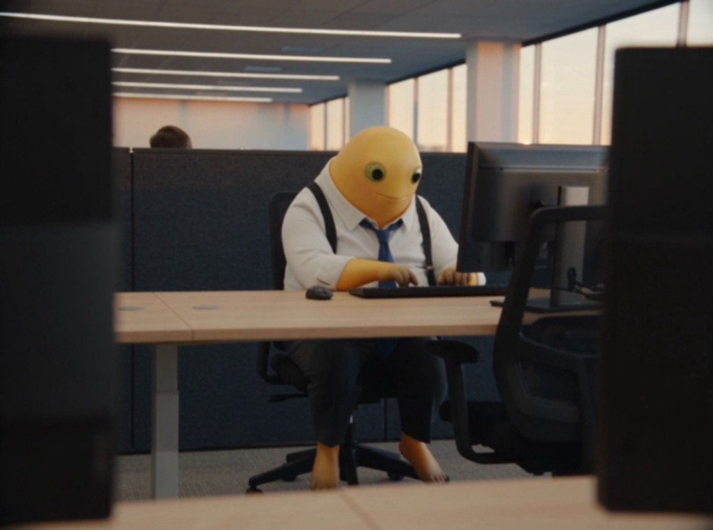
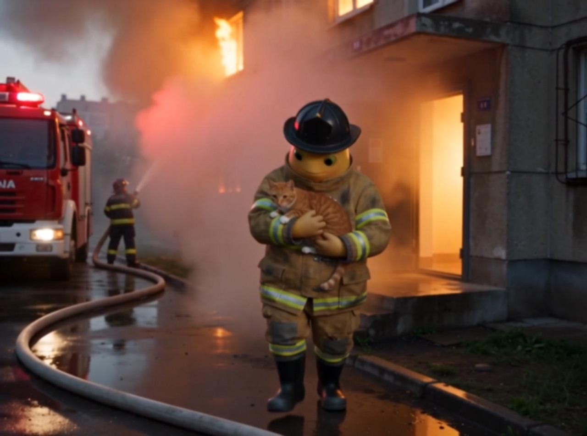
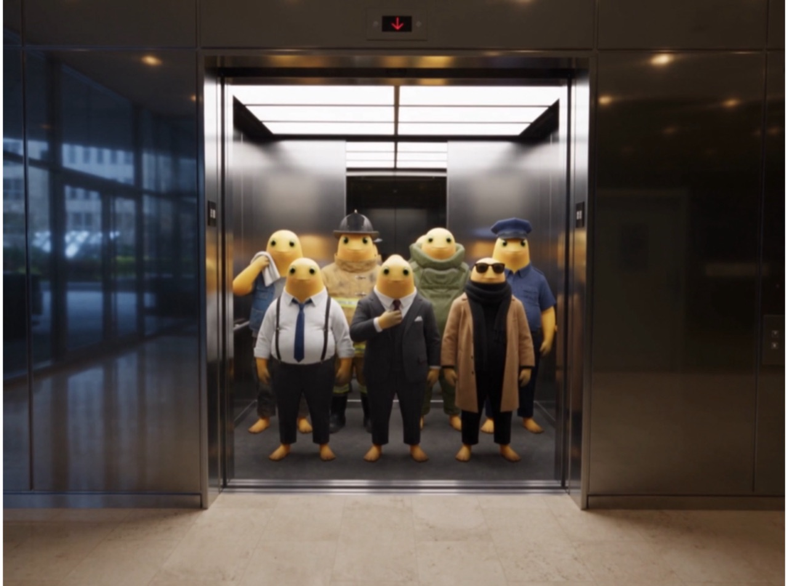
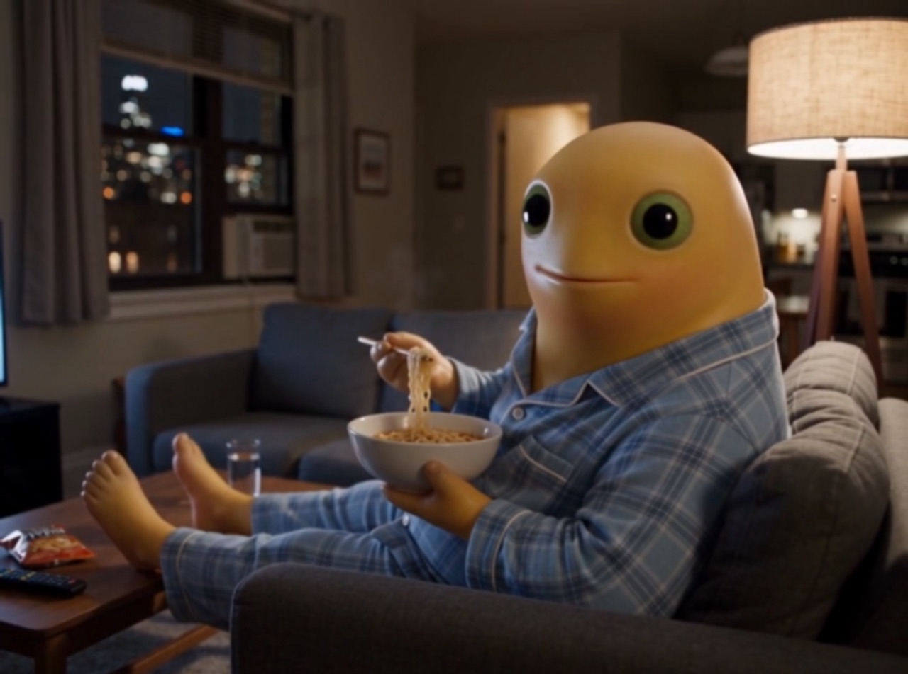
参见See also
吸血鬼与南瓜The Vampire and the Pumpkin
《吸血鬼与南瓜》（英语：The Vampire and the Pumpkin）是一部 AI 生成的情景喜剧短片，片长约 1 分 10 秒，对白为英语。故事发生在万圣节夜晚，讲述男子内特给自己的黑猫莫蒂默穿上南瓜服后，自认为“暗夜生灵”的莫蒂默设法逼他为自己脱下服装的经过。
The Vampire and the Pumpkin is an AI-generated sitcom short of about 1 minute 10 seconds, with dialogue in English. Set on Halloween night, it follows Nate, who dresses his black cat Mortimer in a pumpkin costume, and Mortimer, a self-styled creature of the night, as he tries to force Nate to take it off.
成片Film
剧情Plot
万圣节傍晚，几名孩子提着南瓜桶走下纽约一栋砖楼的台阶。楼内，内特穿着吸血鬼服装走进客厅，让猫猜他扮的是什么。身穿南瓜服的莫蒂默抱怨自己是“暗夜生灵”，却被打扮成了“蔬菜”；内特解释南瓜其实是水果，莫蒂默回应这并不能安慰它。
莫蒂默宣称当晚没人敢来敲门，门铃随即响起。门外的孩子称赞它是“可爱的小猫”，内特以此为据，莫蒂默则回应“公众……只有三英尺高”。莫蒂默命令内特为它脱下服装，遭到拒绝后跳上茶几，一边盯着内特一边将糖果碗慢慢推向桌边，内特随即投降。影片最后硬切至莫蒂默身穿迷你吸血鬼装的近景，镜头拉远后，内特穿着同款服装坐在一旁吃爆米花，两人并排看电视。
On Halloween evening, children carrying pumpkin buckets walk down the steps of a brick building in New York. Inside, Nate enters the living room in a vampire costume and asks the cat to guess what he is. Mortimer, dressed as a pumpkin, complains that he is a creature of the night and has been dressed as a vegetable; Nate explains that a pumpkin is technically a fruit, which Mortimer says is no comfort.
Mortimer declares that no one will dare knock that night, and the doorbell immediately rings. The children outside call him a “cute kitty”, which Nate cites as the public’s opinion; Mortimer replies that “the public… is three feet tall.” Mortimer orders Nate to take the costume off. When Nate refuses, the cat jumps onto the coffee table and, holding his gaze, slowly pushes the candy bowl toward the edge until Nate gives in. The film then cuts to a close-up of Mortimer in a miniature vampire costume; the camera pulls back to reveal Nate in a matching outfit eating popcorn, the two watching television side by side.
制作Production
构思Concept
刘飏想模仿《老友记》的风格自制一个情景喜剧片段，独立撰写英语剧本、设计笑点，并设定人物形象、场景与分镜。影片的核心设定是一只自认为是凶兆的黑猫被迫穿成最可爱的南瓜。喜剧效果主要来自猫以低沉、优雅的嗓音说出委屈的台词，以及结尾的反转：莫蒂默并不反感被打扮，它反感的只是被打扮得“可爱”。
Liu set out to make a sitcom scene in the style of Friends, writing the English script and jokes and designing the characters, set and storyboard. The premise is a black cat who sees himself as a bad omen being forced into the cutest pumpkin costume. The comedy comes mainly from the cat delivering aggrieved lines in a deep, elegant voice, and from the final twist: Mortimer does not object to dressing up, only to being dressed as something cute.
技术难点Technical challenges
- 猫需保持真实猫的身体结构，不得拟人化，且在近景、全景和拉远镜头之间体型保持一致。
- 罐头笑声的位置及静默段落的安排直接影响笑点效果。
- 猫的低音、内特的美式英语和画外儿童的声音需在全片保持一致。
- 门外的儿童只出声、不出镜，需由门板和内特的身体遮挡。
- The cat had to keep a real cat’s anatomy without becoming humanlike, and stay the same size across close-ups, wide shots and pull-backs.
- The placement of the laugh track, and of silent passages, directly affected whether jokes landed.
- The cat’s deep voice, Nate’s American English and the off-screen children’s voices had to remain consistent throughout.
- The children at the door are heard but never seen, kept out of frame by the door and Nate’s body.
笑点设计Comic structure
全片最大的笑点被安排在结尾的硬切而非台词上。内特说出“I’ll take it off”后，该段不使用任何笑声，使观众预期下一幕是猫脱下服装；下一镜头却是莫蒂默穿着与内特相同的迷你吸血鬼装。最后一个镜头从猫的近景拉远至内特，使笑点分两次出现。推糖果碗一段几乎没有台词，命令、拒绝、无声威胁、僵持和服软均通过动作和视线完成，也是全片唯一刻意不放笑声的段落。
The biggest laugh is placed on the final hard cut rather than on a line. After Nate says “I’ll take it off,” the segment uses no laughter at all, leading the audience to expect the cat out of costume; the next shot instead shows Mortimer in a miniature vampire outfit matching Nate’s. The last shot pulls back from the cat to Nate, so the joke lands twice. The candy-bowl scene has almost no dialogue: the order, refusal, silent threat, standoff and surrender are carried by action and eyeline, and it is the only part of the film deliberately left without laughter.
提示词：Prompt (original, in Chinese):
90年代多机位情景喜剧场景，连续镜头，16:9横屏。 35mm胶片质感，温馨的纽约老公寓客厅，万圣节装饰。暖色钨丝灯光，各方向柔和补光，没有强烈阴影。舞台式平面调度，角色面向镜头，细腻胶片颗粒，情景喜剧布景的明亮感。 夜晚：室内台灯和橙色南瓜串灯全部亮着，镜头外沙发对面的电视在人物脸上投下轻微闪烁的蓝白色微光。所有对白为英语。 人物—— 内特： 【参考图 1】 二十八九岁的美国男生，金棕色微卷蓬松背头，侧分，蓝眼睛，浓眉，笑起来露出廉价的塑料吸血鬼獠牙。廉价吸血鬼服装：黑色缎面长斗篷配红色内衬，高高竖起的硬领；白色荷叶边褶皱衬衫；黑色宽腰封；黑色西裤，黑皮鞋。热情，反应慢半拍，表情夸张有喜剧感。说美式英语，声音明亮、热情、带点傻气。 莫蒂默： 【参考图 7】 照片级真实的黑猫，短毛乌黑发亮，金黄色眼睛，穿着一套迷你吸血鬼装：小小的黑色缎面披风配红色内衬，竖起的小硬领，胸前一小片白色荷叶边领巾，和内特的服装是同款。真实猫的身体结构和比例，四条腿，蹲坐，不拟人，没有人类手臂和手。 莫蒂默的声音： 【参考图 4】 低沉浑厚的低音炮男声，像古典恐怖片里优雅的怪物伯爵。发音考究，字字清晰，胸腔共鸣很重。语速缓慢，尾音拖长，带着压抑的怒火和贵族式的不屑。语调起伏自然、富有表现力，绝不平淡单调，绝不像机器或合成语音。内特的声音： 【参考图 3】 年轻的美国男声，说美式英语。声音明亮、热情、带点傻气，语速偏快。 道具——糖果碗：黑底大碗，印满橘色南瓜灯图案，堆满彩色锡纸包装的万圣节糖果，放在茶几上，旁边是一个真南瓜和几本杂志。 场景—— 【参考图 6】 【参考图 2】 红色布艺三人沙发，配蓝色靠垫和黑白条纹靠垫；沙发前是深色实木长茶几；红蓝花纹波斯地毯；沙发两侧各一盏黄铜底座、米白灯罩的台灯；塞满书和录像带的深色木书架；米白墙面，局部露出红砖；后方是挂着纱帘和黑色蝙蝠拉花的深色木质拱门，门楣上有橙色南瓜串灯，拱门里能看到白色厨房。 0:00–0:8 —— 近景，然后缓慢变焦拉远，机位固定，正面对着沙发。 画面一开始只有猫：它端坐在红色沙发左端，穿着迷你吸血鬼装，小硬领竖在脑后，平静地看着镜头外的电视，电视光在它脸上闪烁。表情平静、满足。 镜头慢慢变焦拉远。猫的右侧逐渐露出内特，他穿着一模一样的吸血鬼服装，腿上抱着爆米花桶，正抓起一把爆米花塞进嘴里，一边嚼一边开心地盯着电视。镜头继续拉远，最后停在双人中景：整个沙发和茶几都在画面里，猫在左，内特在右，两人穿着同款吸血鬼装，并排看电视。内特又往嘴里放了一颗爆米花。完美和谐。镜头停住，谁都不说话。定格结尾。 [罐头笑声：硬切到猫穿吸血鬼装的瞬间爆发大笑；拉远露出内特同款装扮时，转为温暖的笑声和掌声，最后接情景喜剧收尾音效] 音频：90年代情景喜剧罐头笑声和掌声，结尾接情景喜剧收尾音效，除此之外没有背景音乐。室内底噪，电视里模糊的对白声。没有任何人说话。 负面：任何对白，说话，开头画面里出现内特，镜头推近，机位移动，昏暗的电影调色，阴森的恐怖片打光，曝光不足，冷蓝色室内，手持镜头，画面晃动，浅景深虚化，鱼眼，广角畸变，卡通猫，3D渲染，皮克斯风，动漫，拟人化的猫，两条腿站立的猫，人类的手，手指，畸形肢体，多余的肢体，巨大的猫，和人一样大的猫，迷你猫，拉远过程中猫的体型变化，猫穿着南瓜服，南瓜帽，猫的吸血鬼装与内特的不同款，碗悬在桌边，糖果洒在地上，白天，阳光，文字，水印，logo，字幕。
图集Gallery
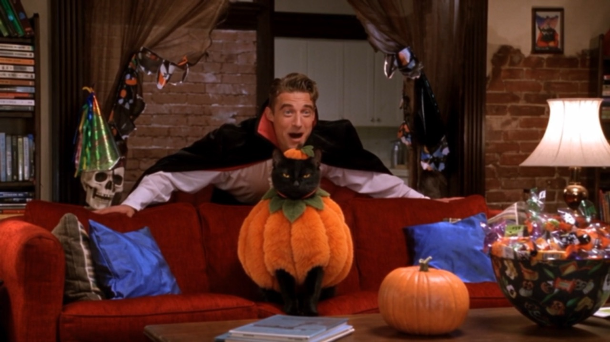
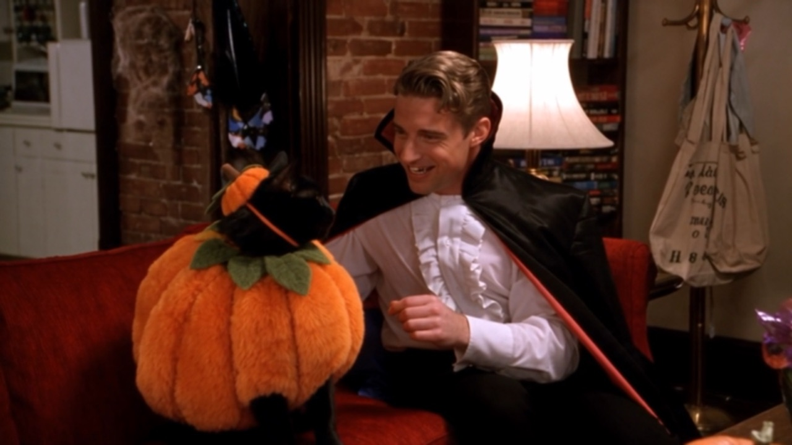
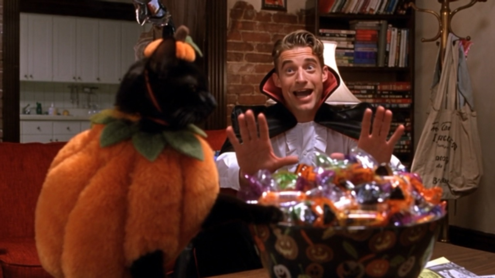
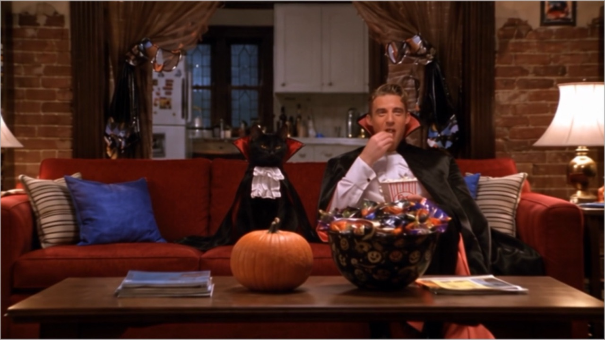
参见See also
视频提示词 SkillVideo prompt skill
视频提示词 Skill是刘飏在 AI 视频创作中整理出的一套提示词工具。他学习了优秀视频的提示词结构，再结合自己过往作品的提示词，把零散的经验整理成可以组合的模块。有了新想法，只需写一份简短的 brief、选几个模块代码，就能组装出完整的视频生成提示词。
The video prompt skill is a prompt tool Liu Yang put together while making AI video. He studied how strong video prompts are structured and combined that with the prompts from his own past work, turning scattered experience into blocks that can be combined. For a new idea, a short brief and a handful of block codes are enough to assemble a complete video-generation prompt.
背景Background
AI 视频的生成结果很不稳定。每个新想法都要从头写提示词，运镜、光影、人物表演这些经验，上一部片子里摸索出来，到下一部又要重新摸索一遍。这套 Skill 的目的，就是把这些经验固定下来，可以反复使用。
AI video output is unpredictable. Every new idea meant writing prompts from scratch, and whatever was worked out about camera movement, light or performance in one film had to be worked out again in the next. The skill exists to pin that experience down so it can be reused.
结构Structure
输入层Input
一份简短的 brief，写清核心技巧、画幅与时长、参考素材、负面提示词、易错点、画面中的数量，以及角色的任务与表演。
A short brief stating the core technique, aspect ratio and length, reference assets, negative prompts, likely failure points, exact counts in frame, and the character’s task and performance.
规则层Rules
8 条通用原则：
Eight general principles:
- 一个视频只围绕一个技巧展开
- 先给出规则，再推出它带来的结果
- 明确告诉模型哪两条最重要
- 用数字代替形容词
- 提前写明失败的样子
- 负面提示词要针对这一条视频来写
- 不许从参考图里带入多余的元素
- 给角色一个不会放下的小任务
- Build each video around one technique
- State the rule first, then derive its consequences
- Tell the model which two rules matter most
- Use numbers instead of adjectives
- Describe what failure looks like in advance
- Write negative prompts for this specific video
- Ban unwanted elements carried over from reference images
- Give the character a small task they never drop
模块库Block library
9 类 41 个模块，最后按固定顺序拼成完整提示词。
41 blocks in 9 categories, assembled into a full prompt in a fixed order.
| 类别Category | 模块示例Example blocks |
|---|---|
| 角色（4）Character (4) | 面部锁定、身材比例、着装、小任务Face lock, body proportions, coverage, small task |
| 运镜（8）Camera (8) | 手持、带呼吸感的三脚架、绑在物体上、第一人称、拉远后转向人脸、过肩、高机位、手动变焦Handheld, a tripod that breathes, rig on an object, point of view, pull-back and turn to the face, over the shoulder, high angle, manual zoom |
| 光学（5）Optics (5) | 变形宽银幕、宾得镜头、广角、微距、标准Anamorphic, Pentax, wide, macro, normal |
| 调色（4）Grade (4) | 明亮、冷绿、暗暖、锁色Bright, cool green, warm dark, grade lock |
| 环境（6）World (6) | 风、水、雨、活的背景、融合、比例Wind, water, rain, living background, integration, scale |
| 规则（7）Rules (7) | 人数、数量、失败条件、防冻结、防串图、画面文字、解剖结构People, count, failure, no freezing, no contamination, on-screen text, anatomy |
| 表演（3）Acting (3) | 表演任务、克制、视线Acting task, restraint, gaze |
| 声音（2）Sound (2) | 声音、声音切换Sound, sound switch |
| 负面（2）Negative (2) | 基础负面、反向负面Base negative, inverse negative |
迭代Iteration
遇到一个常见问题，就补一个对应的模块：画面冻结对应「防冻结」，肢体崩坏对应「解剖结构」，文字乱码对应「画面文字」，风格漂移对应「锁色」和「防串图」。
Each recurring problem gets its own block: frozen frames led to “no freezing”, broken limbs to “anatomy”, garbled text to “on-screen text”, and style drift to “grade lock” and “no contamination”.
配套的分镜 SkillCompanion storyboard skill
输入一段剧情文本，输出中文的画面规格书，逐镜写明景别、光源、纵深、色彩、质感和镜头衔接。这个 Skill 从 v4 一路迭代到了 v5.8。《小星电话手表广告》就是用这套体系做出来的。
Given a passage of story text, it returns a Chinese shot-by-shot specification covering shot size, light source, depth, colour, texture and transitions. It has been revised from v4 to v5.8. Xiaoxing Phone Watch Ad was made with this system.
参见See also
「仓库」AppCangku app
「仓库」是刘飏为自己的内容创作设计并开发的灵感记录 App，有 iOS 原生版和网页版，于 2026 年 9 月完成。它要解决的是两个问题：灵感出现时，常用的记录工具打开路径太长；记下来的灵感，很少再被翻出来用。
Cangku (“Storeroom”) is an idea-capture app that Liu Yang designed and built for his own creative work, with a native iOS version and a web version, completed in September 2026. It tackles two problems: the usual note-taking tools take too long to open when an idea strikes, and ideas once written down are rarely used again.
宣传片Promo video
需求The need
刘飏在做内容时发现，好点子常常出现在走路、通勤或者刷手机的时候，等打开备忘录、找到合适的位置，想法已经淡了。另一个问题在后面：记下的灵感越来越多，真正被用进作品的却很少，大部分沉在列表底部，再也没被看过。所以「仓库」把记录的门槛和灵感的复用放在同样重要的位置。
Liu found that good ideas often arrive while walking, commuting or scrolling, and by the time a notes app is open and the right place found, the idea has faded. The second problem comes later: the pile of saved ideas keeps growing, but few make it into actual work; most sink to the bottom of a list and are never seen again. Cangku therefore gives equal weight to making capture effortless and to bringing ideas back into use.
功能设计Design
- 快记：iPhone 操作按钮和 Siri 绑定为一键「快记」，唤起后直接开始语音转文字；文字、录音、截图可以混在同一条里记，草稿自动保存，中途退出也不会丢。
- 摸一张：随机抽出一条旧灵感，让沉底的想法重新被看到。
- 归类与筛选：在文字里写 # 话题，就会自动归类；还能按星标、有图、有录音筛选。
- 复制次数：每条灵感被复制去用的次数都会记下来，用来判断一条灵感是否真正变成了内容。
- 调性：界面全部用手绘涂鸦和手写字体，每个字的笔画都略有不同；有 4 套配色，首页的灵感罐会随记录数量慢慢装满。
- Quick note: the iPhone Action Button and Siri open a one-tap quick note that starts speech-to-text straight away; text, voice memos and screenshots can go into the same note, and drafts save automatically so nothing is lost on exit.
- Draw one: pulls out a random old idea so buried ones get seen again.
- Topics and filters: writing a #topic files the idea automatically, and ideas can be filtered by star, image or audio.
- Copy count: every time an idea is copied out for use, the count goes up, as a measure of whether it actually became content.
- Character: the whole interface uses hand-drawn doodles and handwritten lettering, with every character drawn slightly differently; there are four colour schemes, and a jar on the home screen slowly fills as ideas accumulate.
开发Build
刘飏使用 Claude Code 完成了 iOS 原生版（SwiftUI）和网页版的开发，数据保存在本机。宣传视频同样用代码制作：先把动画做成网页，再逐帧录制成视频；配乐用代码合成，画面切换卡在节拍上。
Liu built the native iOS version (SwiftUI) and the web version with Claude Code; data stays on the device. The promo video was also made in code: the animation was built as a web page and recorded frame by frame, and the music was synthesised in code with every cut landing on the beat.
图集Gallery
界面中的灵感为演示数据。The ideas shown are demo data.
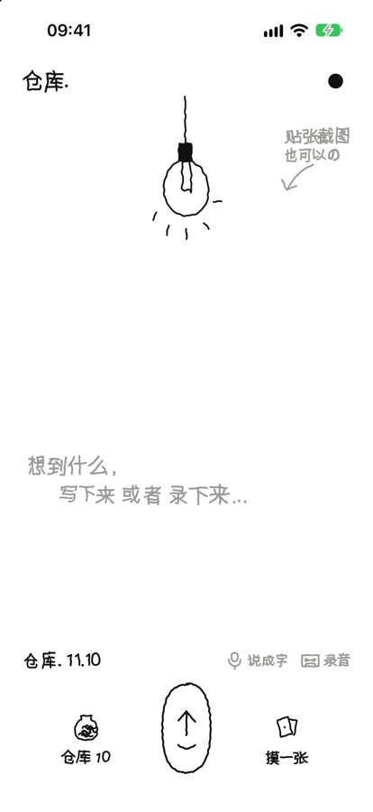
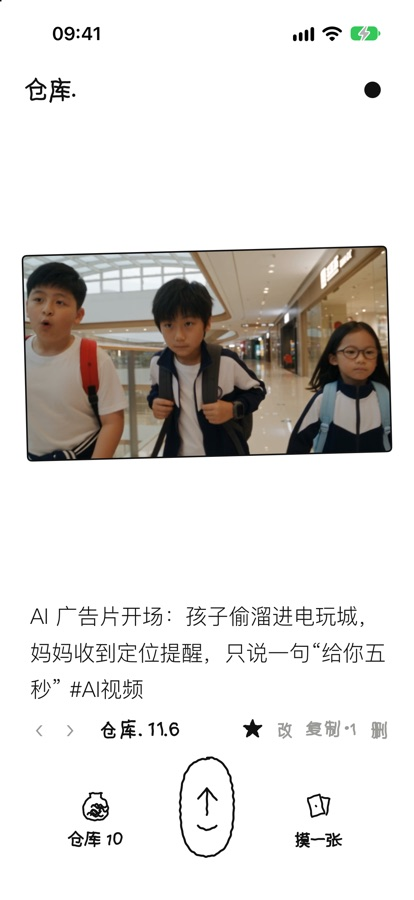
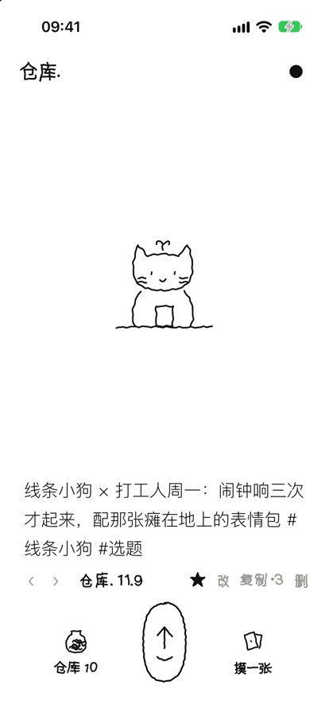
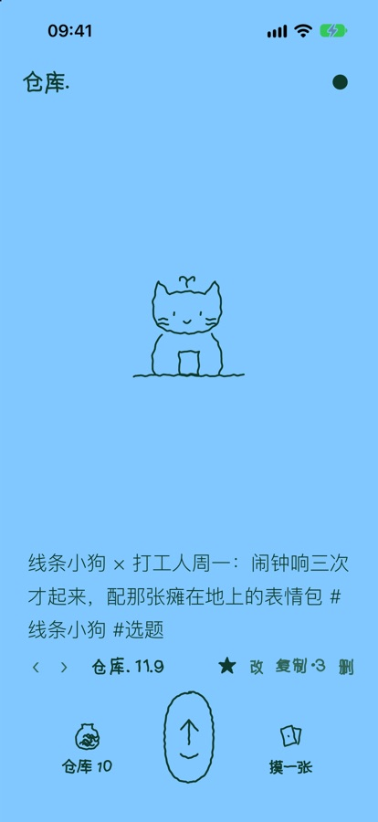
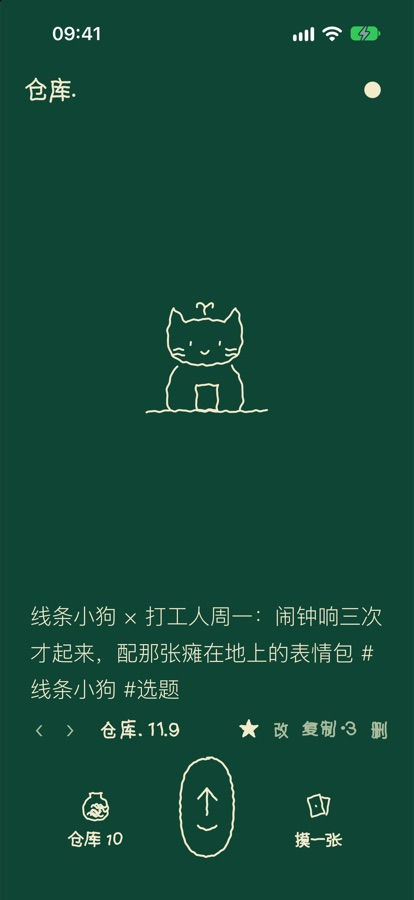
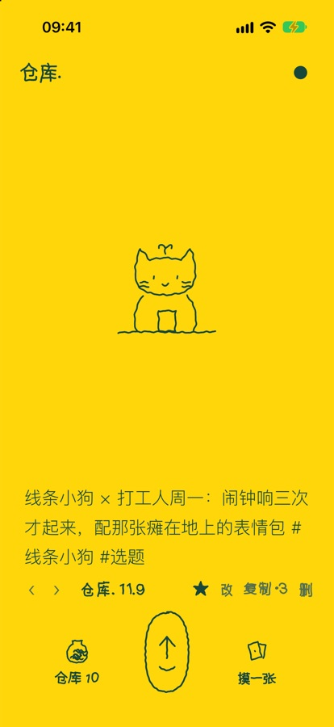
参见See also
AI 视觉图片AI images
本条目收录刘飏使用 AI 图像生成工具制作的静态图像，共 16 幅，按内容分为影视剧照、场景和人像三类。人像部分又分为人脸、写真与服饰。点击图片可查看大图。
This article collects 16 still images made by Liu Yang with AI image-generation tools. They are grouped by content into film stills, scenes and portraits; the portraits are further divided into faces, editorial portraits and wardrobe. Click any image to enlarge it.
影视剧照Film stills
模拟电影画面的单帧图像，画幅为 16:9，包括人物情绪近景和一组动作镜头。
Single frames composed as cinema shots in 16:9, including emotional close-ups and an action sequence.
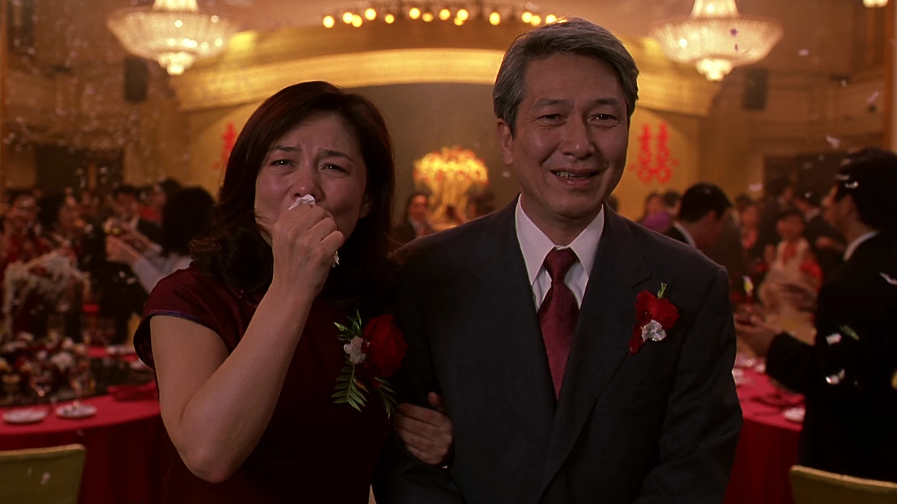
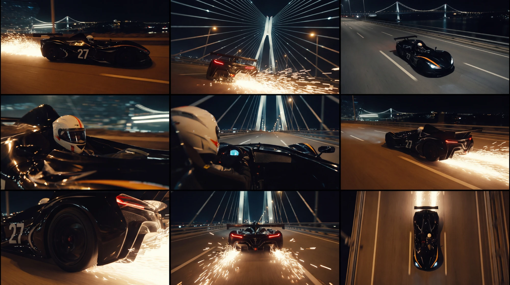
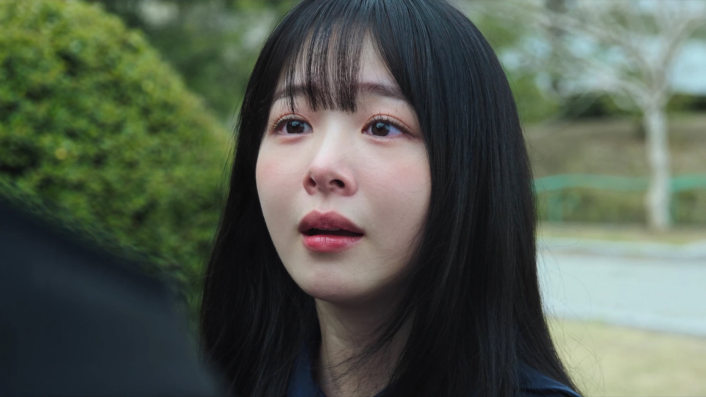
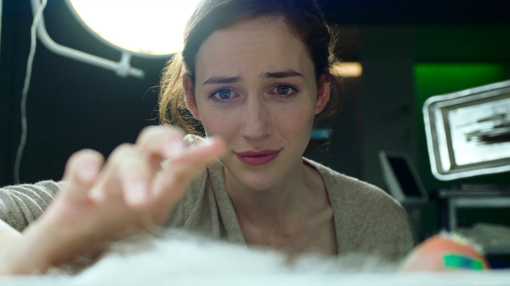
场景Scenes
不含人物的环境图，涵盖室内与室外、日景与夜景。
Environment images without people, covering interiors and exteriors, day and night.
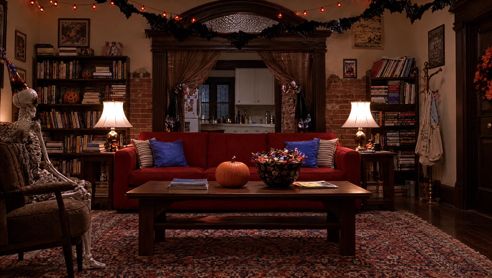
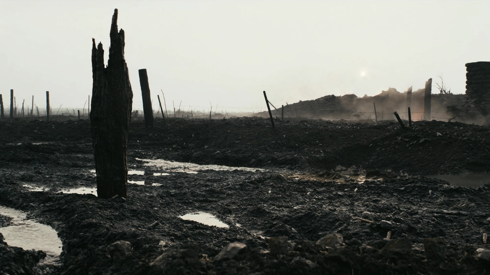
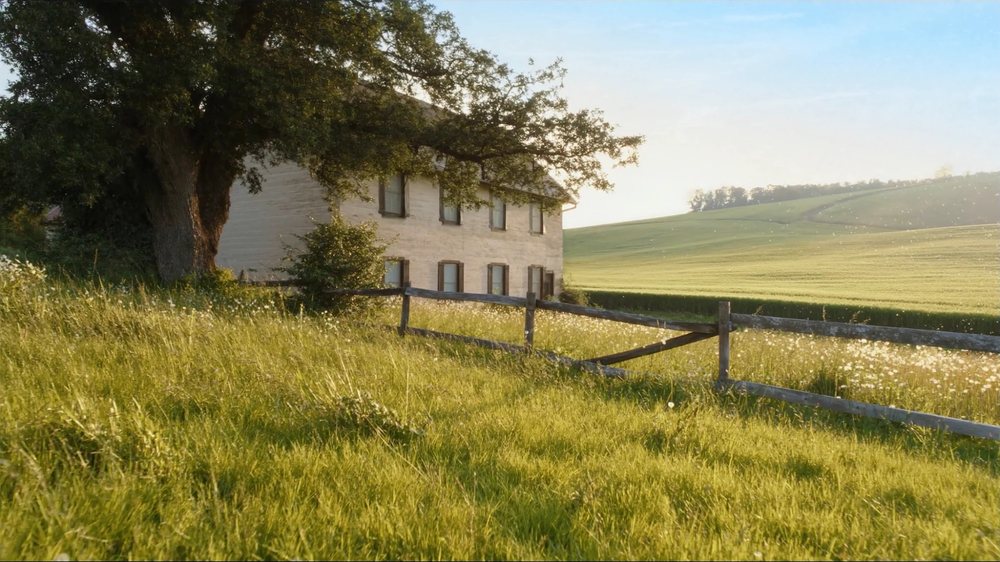
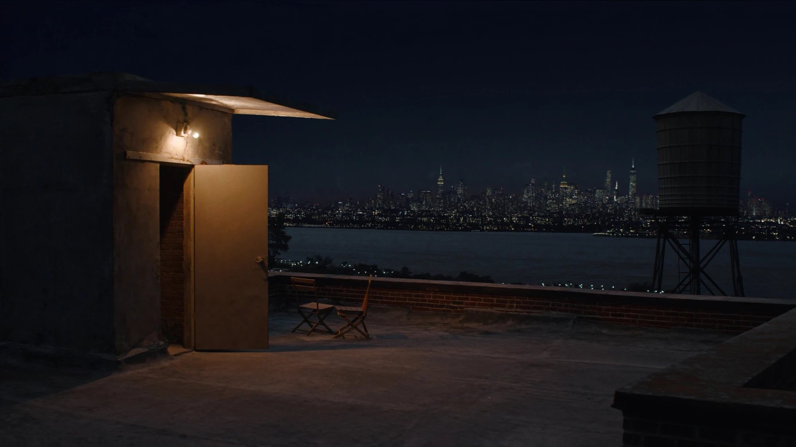
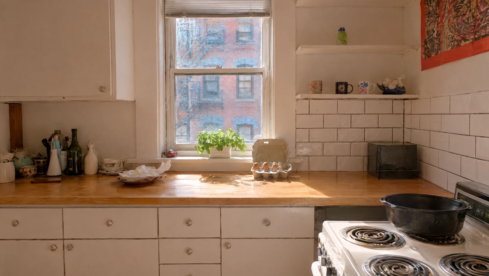
人像Portraits
人脸Faces
三幅采用相同设定：黑色背心、浅色背景、半身构图。
Three images with the same setup—black tank top, light background, half-length framing.
写真Editorial portrait
服饰Wardrobe
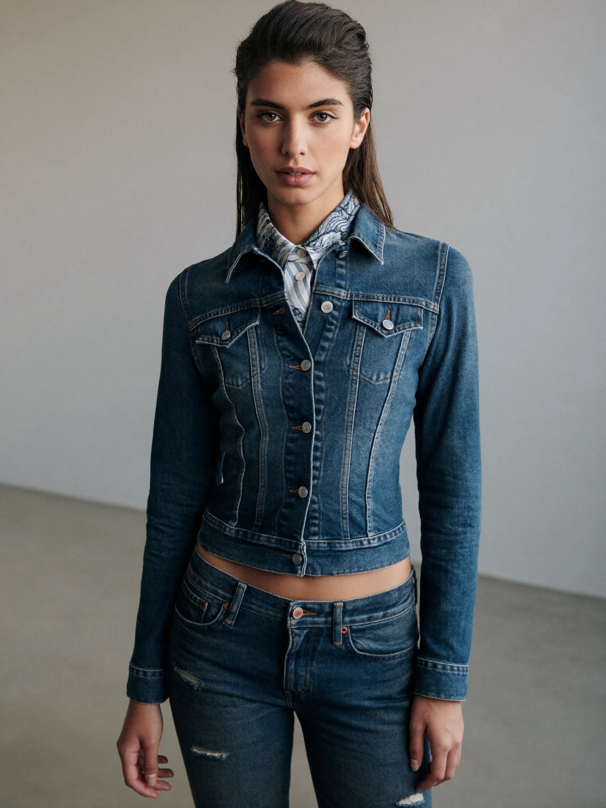
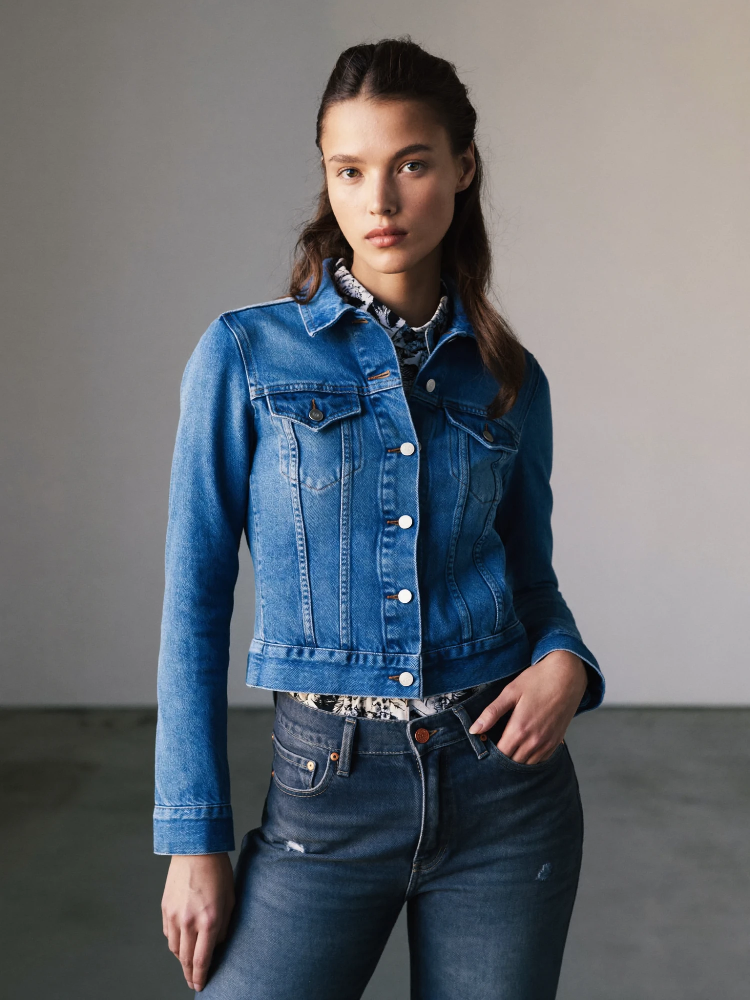
联系Contact
合作或工作机会可通过以下方式联系刘飏。
Liu Yang can be contacted about work or collaboration as follows.
| 邮箱Email | liuyang20mc@163.com |
|---|